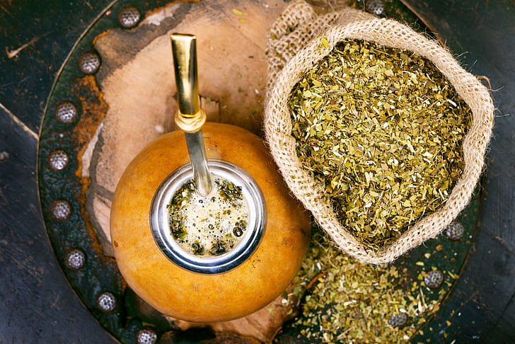

Burrito
Planta aromática, consumida habitualmente en forma de infusión, de sabor exótico y aroma agradable. Poderoso ansiolítico y antidepresivo.
Learn MoreAyuda en la salud cardiovascular. Por su cantidad de antioxidantes el mate ayuda a prevenir enfermedades cardiovasculares evitando que el colesterol y la grasa se acumulen en las arterias. Aumenta el colesterol 'bueno'. Además, compartirlo con amigues te sana en gran cantidad el alma (según Oxford).
Compartir los mates es una manera de conectar con quienes te rodean. No tengas miedo de probar la saliva calentita de otra persona. Preocupate solo si este sujeto tiene antecedentes penales en salivación abundante o mononucliosis.
Planta aromática, consumida habitualmente en forma de infusión, de sabor exótico y aroma agradable. Poderoso ansiolítico y antidepresivo.
Learn MoreFuente de nutrientes esenciales. Es rico en fibra y minerales como el potasio, fósforo, magnesio y hierro. También en vitaminas E, C y del grupo B.
Learn MoreDigestiva y antiespasmódica. También tiene actividad sedativa y tranquilizante del sistema nervioso, antialérgica y estimula el sistema inmunológico.
Learn MorePoner el agua siempre en el mismo lugar, pegado a la bombilla para evitar que el resto de la yerba se moje, así el mate dura más. No muevas la bombilla. Usar un mate de base angosta con boca ancha así podés hacer la montañita de yerba seca en un costado e ir mojándola de a poco. Si dejás de cebar, la yerba se enfría y los mates se lavan. La clave está en seguir hasta que toda la yerba esté mojada. Ante todo, colocá un chorro de agua fría o apenas tibia junto a la bombilla y dejá que haga burbujas. Un minuto después, cebalo con el agua a la temperatura correcta y seguí la ronda con normalidad.
Learn More